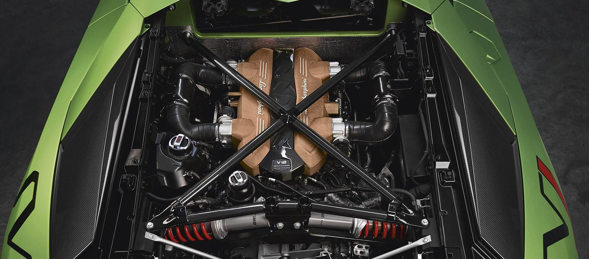

ზოგადი ინფორმაცია მანქანების შესახებ
მოწყობილობა, რომელიც ენერგიის, მასალისა და ინფორმაციის გარდასაქმნელად მექანიკურ მოძრაობებს ასრულებს. ძირითადი დანიშნულების მიხედვით მანქანა 3 სახისაა: ენერგეტიკული, სამუშაო და საინფორმაციო. ენერგეტიკულ მანქანებს, რომელთა დანიშნულებაა ნებისმიერი სახეობის ენერგიის გარდაქმნა მექანიკურ ენერგიად, მანქანა-ძრავებს უწოდებენ (ელექტროძრავა, შიგაწვის ძრავა, ტურბინა, დგუშიანი და ორთქლის მანქანები, ელექტროგენერატორი). სამუშაო მანქანები ორგვარია: ტექნოლოგიური და სატრანსპორტო. ტექნოლოგიურ მანქანაში გარდასაქმნელი მასალაა მყარი, თხევადი ან აირისებრი დასამუშავებელი საგანი, რომელსაც მანქანა უცვლის ფორმას, თვისებებს, მდგომარეობასა და მდებარეობას. სატრანსპორტო მანქანებში გარდასაქმნელი მასალა გადასაადგილებელი საგანია, რომელსაც მანქანა მხოლოდ მდებარეობას უცვლის. ტექნოლოგიური მანქანებია ლითონდასამუშავებელი ჩარხები, საგლინი დგანები, საქსოვი დაზგები, საფუთავი, აგრეთვე პოლიგრაფიის მანქანები; სატრანსპორტო — ავტომობილი, თბომავალი, თვითმფრინავი, შვეულმფრენი, საწეველა,კონვეიერი და სხვა. საინფორმაციო მანქანების დანიშნულებაა ინფორმაციის გარდაქმნა. მანქანებს, რომლებშიც ენერგიის, მასალის, ინფორმაციის ყველა გარდაქმნა ადამიანის უშუალო მონაწილეობის გარეშე სრულდება, მანქანა — ავტომატს ან უბრალოდ ავტომატს უწოდებენ. ერთმანეთთან თანამიმდევრულად შეერთებული და გარკვეული ტექნიკური პროცესის შემსრულებელი მანქანა — ავტომატების ერთობლიობა ქმნის ავტომატურ ხაზს. მანქანა და მანქანა-ავტომატი ამსუბუქებს ადამიანის შრომას, ზრდის შრომისნაყოფიერებას და უზრუნველყოფს სამუშაო პროცესის შესრულების მაღალ ხარისხს.
